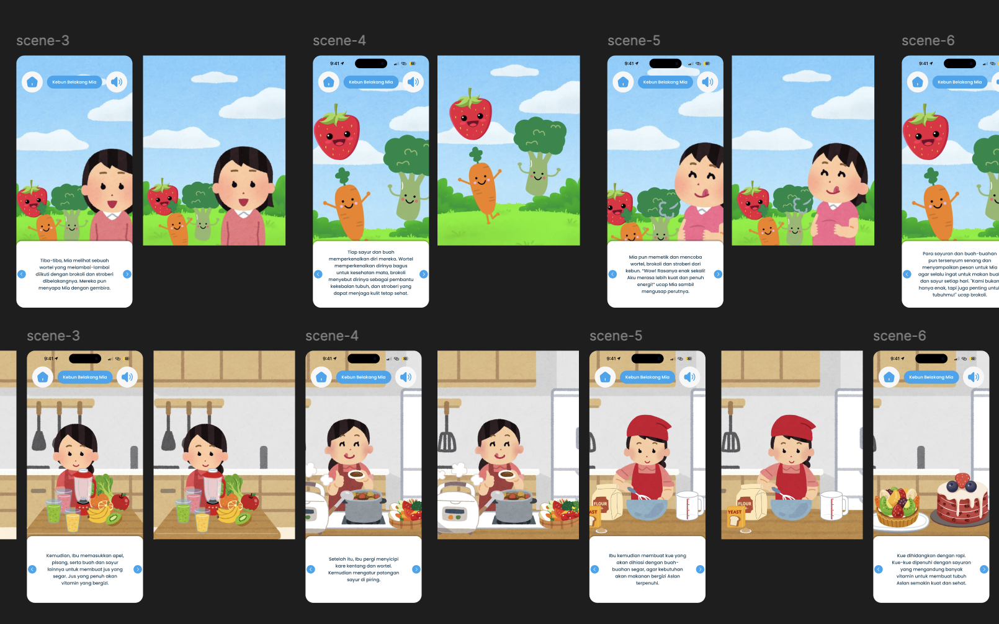

Fruggies Tales

Project Overview
Fruggies Tales is an interactive storytelling and Augmented Reality mobile application designed to encourage children to love vegetables and fruits through playful learning experiences.
The application combines storytelling, colorful visual interactions, and AR technology to create a more engaging educational experience for children. By transforming healthy eating into an adventure-based activity, Fruggies Tales aims to make nutrition education feel exciting rather than forced.
As the UI/UX Designer, I was responsible for designing the application interface, user flow, and overall interaction experience to ensure the product felt intuitive, playful, and child-friendly.
The Problem
Challenges in Healthy Eating Education
Many children perceive vegetables and fruits as boring, making it difficult for parents and educators to encourage healthy eating habits in an engaging way.
Existing educational applications often rely on static learning methods that fail to maintain children's attention for long periods. The challenge was to design an experience that could combine education, entertainment, and interactivity into one seamless mobile application.
Design Process
To create a fun and immersive learning experience for children, the design process focused heavily on playful interactions, visual storytelling, and intuitive navigation suitable for younger audiences.
Research & Ideation
Conducted research about children's learning behavior, interactive storytelling techniques, and gamified educational experiences. Brainstormed features that could make healthy eating feel fun and rewarding for kids.
Wireframing
Created low-fidelity wireframes to map user journeys and determine how children would interact with stories, mini-games, and AR features in a simple and intuitive flow.
Visual Design
Designed colorful interfaces with playful illustrations, rounded shapes, and expressive typography to create a cheerful atmosphere suitable for children.
Hi-fi Prototype
Developed high-fidelity prototypes in Figma to visualize the final interaction experience, including onboarding screens, story interactions, and Augmented Reality integration.

My Contributions
- Designed playful and child-friendly mobile interfaces.
- Created user flows for storytelling and AR interactions.
- Developed visual direction using colorful educational design principles.
- Collaborated within a scrum-based product development workflow.
- Applied design thinking methodologies throughout the product process.
- Conducted User Acceptance Testing (UAT) to childrens.